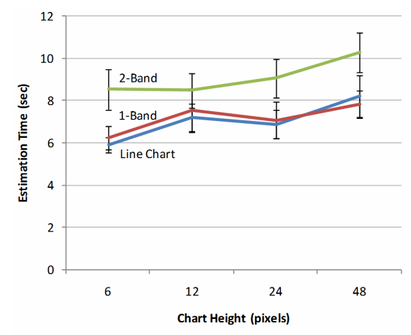

Visual representations of
time series
- The familiar: line charts, scatterplots
- The not so familiar: stripe, and horizon graphs
- Interaction techniques
- Graphical perception of times series
- Tempo: faceted visualization of time series
set A
| x | y |
| 10 | 8.04 |
| 8 | 6.95 |
| 13 | 7.58 |
| 9 | 8.81 |
| 11 | 8.33 |
| 14 | 9.96 |
| 6 | 7.24 |
| 4 | 4.26 |
| 12 | 10.84 |
| 7 | 4.82 |
| 5 | 5.68 |
set B
| x | y |
| 10 | 9.14 |
| 8 | 8.14 |
| 13 | 8.74 |
| 9 | 8.77 |
| 11 | 9.26 |
| 14 | 8.1 |
| 6 | 6.13 |
| 4 | 3.1 |
| 12 | 9.13 |
| 7 | 7.26 |
| 5 | 4.74 |
set C
| x | y |
| 10 | 7.46 |
| 8 | 6.77 |
| 13 | 12.74 |
| 9 | 7.11 |
| 11 | 7.81 |
| 14 | 8.84 |
| 6 | 6.08 |
| 4 | 5.39 |
| 12 | 8.15 |
| 7 | 6.42 |
| 5 | 5.73 |
set D
| x | y |
| 8 | 6.58 |
| 8 | 5.76 |
| 8 | 7.71 |
| 8 | 8.84 |
| 8 | 8.47 |
| 8 | 7.04 |
| 8 | 5.25 |
| 19 | 12.5 |
| 8 | 5.56 |
| 8 | 7.91 |
| 8 | 6.89 |
mean
9.00 | 7.50
9.00 | 7.50
9.00 | 7.50
9.00 | 7.50
variance
11.00 | 4.12
11.00 | 4.12
11.00 | 4.12
11.00 | 4.12
correlation
0.816
0.816
0.816
0.816
regression
Y = .5X + 3
Y = .5X + 3
Y = .5X + 3
Y = .5X + 3
R2
0.66
0.66
0.66
0.66
Eco-Spec Time series
Environmental variables and flux measurements
air temperature = [ 15.0, 15.5, 15.1, 14.7, 16.3, 18.7, 19.8, 20.3, 19.5, 16.9, 18.1, 16.1, 14.1, 15.5, ... ]
rel. humidity = [ 60.1, 67.1, 62.0, 54.0, 51.8, 61.3, 64.9, 65.5, 63.0, 60.1, 57.2, 51.0, 55.0, 54.1, ... ]
carbon flux = [ 1.11, 1.22, 1.14, 1.15, 1.44, 1.21, 1.31, 1.12, 1.11, 1.12, 1.15, 1.12, 1.14, 1.12, ... ]
...
Hyperspectal optical indices
NDVI = [ 0.06, 0.05, 0.07, 0.09, 0.07, 0.05, 0.07, 0.09, 0.06, 0.05, 0.05, 0.06, 0.06, 0.05, ... ]
RENDVI = [ 0.09, 0.10, 0.12, 0.10, 0.11, 0.12, 0.12, 0.11, 0.09, 0.13, 0.09, 0.09, 0.10, 0.09, ... ]
CI = [ 1.11, 1.22, 1.14, 1.15, 1.44, 1.21, 1.31, 1.12, 1.11, 1.12, 1.15, 1.12, 1.14, 1.12, ... ]
...Analytical tasks
- Understand association between hyperspectral reflectance and plant physiological processes
- Analyze the above relationships at different seasonal and diurnal phases
- Develop models to predict carbon flux based on optical indices
Analyze relationships between multiple time series
Time series
visualization
Line charts

William Playfair. Commercial and Political Atlas, 1786
Gross Domestic Product (USD per capita)
Small multiples
Aspect ratio matters
Atmospheric Carbon Dioxide
Average absolute orientation of line segments should be close to 45° for better perception
Multi-scale views
Chicago temperature anomalies
Multi-scale views
Waqas and Elmqvist. Stack Zooming for multi-focus interaction in time-series data visualization
Lenses

Zhao et al. Exploratory Analysis of Time-Series with ChronoLenses. Transactions on Visualization and Computer Graphics 17(12), pp. 2422-2431, 2011
Multi-scale views
Zhao et al. KronoMiner: Using Multi-Foci Navigation for the Visual Exploration of Time-Series Data. CHI'11
Stripe chart
Encode time series value with color as opposed to position
Dow Jones index
Stripe chart
High frequency noise
Stripe chart
Electropherograms (112 Wheat strains)Kincaid and Lam. Line Graph Explorer: Scalable Display of Line Graphs Using Focus+Context, AVI'06
Stripe chart
Electropherograms (112 Wheat strains)Kincaid and Lam. Line Graph Explorer: Scalable Display of Line Graphs Using Focus+Context, AVI'06
Horizon chart
Temperature anomalies
Graphical perception of Horizon Charts
Graphical perception of Horizon Charts

Graphical perception of Horizon Charts
Horizon vs. Line chart
- A 2-band horizon chart is more accurate than a standard line chart
- Horizon charts take more time to "read" than traditional line charts
- Increasing the number of bands decreases estimation accuracy
- The ability to see more time series may outweigh the loss of accuracy

Comparison of multiple time series
- If the analysis requires comparison across a large visual span, use small-multiples or horizon plots
- If task requires local comparisons within a short visual span, use simple line or braided charts
- Small multiples is generally a good choice for intuitiveness and speed
Scatterplots
Scatterplots
Animated scatterplots

Connected scatterplots
Tempo
- Web-based tool for visualizing time series
- Show diurnal and seasonal associations between variables
- Combine scatterplots and line charts
- Faceted views to limit visual clutter and stratify data temporally
Demo
Future work
- Automatic classification / ordering of views based on shape-characteristics of scatterplots
- Provide mechanisms to load larger datasets
- Improve interactions